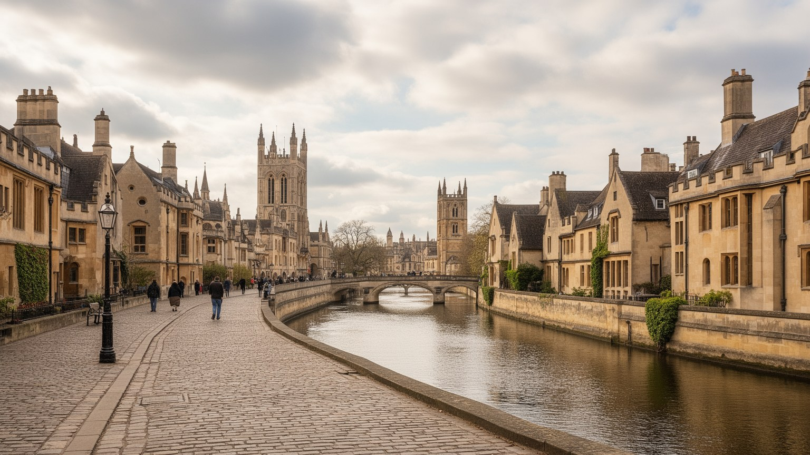
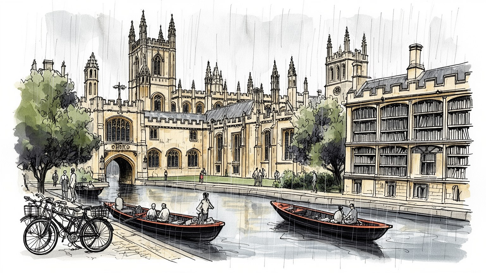
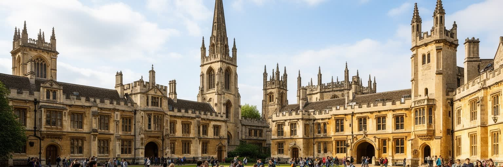
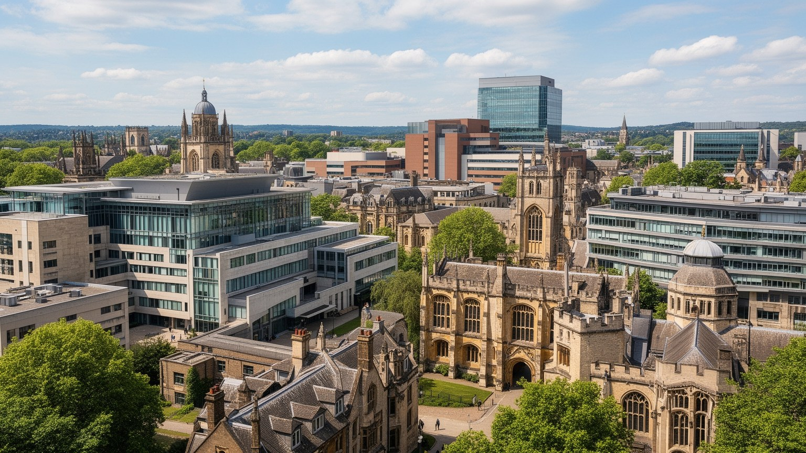
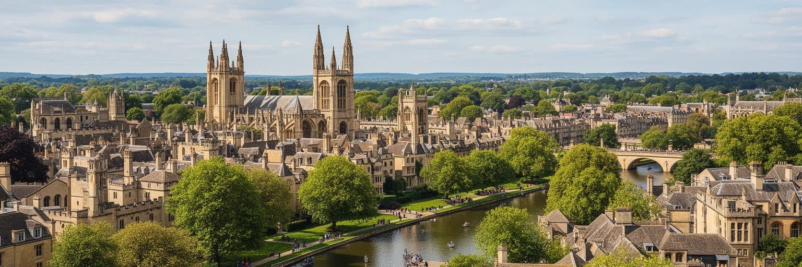
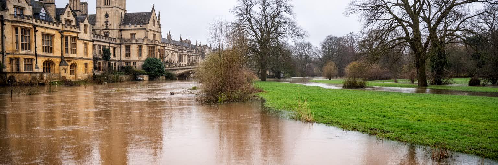
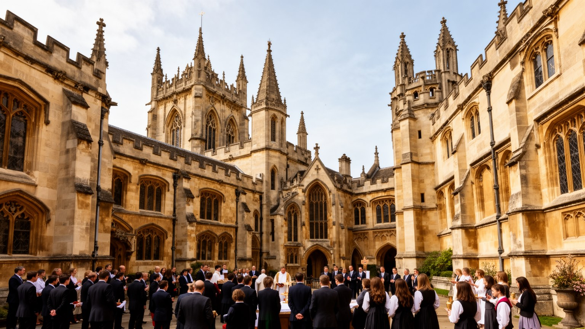
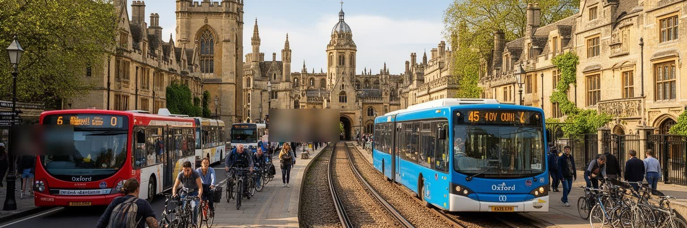
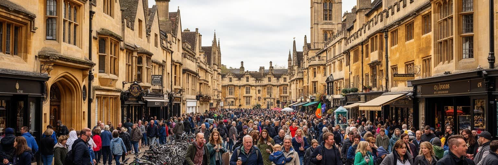

地政学
オックスフォードは国家首都ではありませんが、大学、政策人材、研究、出版、国際学生を通じて英国と世界を結びます。ロンドンに近い位置、空港連絡、鉄道、学術ネットワークが、小都市に外交的な影響力を持たせます。

🇬🇧 イギリス / イングランド / World City Atlas
大学都市の名声、出版と医療研究、カレッジの中庭、観光の混雑、住宅費、運河と川の低地が、コンパクトな市域で重なる知識都市です。
都市の骨格
オックスフォードは、カレッジの中庭、ボドリアン図書館、出版社、病院、研究施設、川沿いの低地、郊外の住宅地が近距離に集まる都市です。名門大学の景観の背後に、労働、住宅、観光、信仰、交通の調整があります。

オックスフォードは国家首都ではありませんが、大学、政策人材、研究、出版、国際学生を通じて英国と世界を結びます。ロンドンに近い位置、空港連絡、鉄道、学術ネットワークが、小都市に外交的な影響力を持たせます。
大学、病院、出版、バイオ医療、観光、飲食、清掃、警備、学生向けサービスが雇用を作ります。研究者や専門職の隣で、寮、図書館、厨房、ホテル、バス、介護の働き手が都市の名声を日々支えます。賃金差も見えます。
英国国教会、礼拝堂合唱、書店、学生劇、ライブハウス、移民の礼拝所が文化を厚くします。祈り、討論、出版、食事、祭礼、地域活動が結び、街の時間を作ります。朝の鐘も夜の音も響きます。季節行事も人を集めます。
観光客は尖塔、図書館、中庭、運河、庭園を歩きますが、住民には家賃、通学路、介護、買い物、洪水、物価、短期滞在、観光混雑が切実です。美しい学都は、生活都市としての調整で保たれます。市場も暮らしを支えます。

オックスフォードの中心は、広場一つに権力が集まる都市とは違い、カレッジ、教会、図書館、講堂、食堂、庭園、中庭が細かく連なる構造を持ちます。通りから見える石造の壁の内側には、学習、礼拝、食事、宿泊、研究、儀礼が組み込まれ、大学と都市が完全には分離しないまま成長してきました。ハイ・ストリート、ラドクリフ・スクエア、ブロード・ストリート、カーファックス周辺では、観光列、制服の子ども、自転車、配達員、屋台の香り、石畳を叩く雨音が重なります。カバード・マーケットの匂い、靴音、紙袋、路上演奏も、学寮の景観を日常へ戻します。一方で、閉じた中庭の美しさは、誰が中へ入れるのかという境界も作ります。観光客、学生、教職員、清掃員、住民は同じ道を使いますが、使える時間、扉、庭、食堂は異なります。オックスフォードの都市景観は、知の公共性と選抜の制度が同じ建築に宿る場所です。カレッジの壁は伝統を守る装置として働き、同時に都市の開放性を測る境界線にもなります。中心部の土地が限られるほど、大学施設、商店、住居、観光の需要はぶつかります。門の前で止まるツアー客、搬入口を探す車、授業へ急ぐ学生は、同じ狭い中心で時間を分け合います。景観を読むには、尖塔だけでなく市場、学校帰り、夜の警備、朝の清掃も見る必要があります。朝市の気配も加わります。

オックスフォードの経済は、学生と観光だけでなく、大学研究、病院、医療技術、バイオサイエンス、出版、語学教育、会議、専門サービスに支えられます。大学は世界中から研究者、大学院生、寄付、企業連携を集め、病院群と研究施設は医療、創薬、臨床試験、データ分析を都市圏へ引き寄せます。出版は学術書と教育教材の歴史を持ち、編集、権利管理、デジタル学習、国際販売、地域メディアの仕事とも結びつきます。しかし高い生産性は、すべての住民に同じ利益を届けるわけではありません。専門職の賃金と学生需要は家賃を押し上げ、ホテル、清掃、厨房、介護、警備、配達、バス運転、建設、屋台やマーケットの働き手は市内に住みにくくなります。知識都市の名声は、研究成果だけでなく、実験室、病棟、図書館、寮、カフェを毎日動かす労働によって成立します。研究資金や企業投資が増えるほど、公共交通、保育、手頃な住宅、技能訓練が重要になります。飲食店の昼食需要、学生向け古着店、週末の露店も、研究都市の足元を作ります。オックスフォードを経済都市として読むには、受賞歴だけでなく、知識を生む制度が地域の生活条件とどう結びつくかを見る必要があります。発明や論文が世界へ出る時、その基礎には地域の学校、住宅、病院、通勤路、移民労働、商店の安定があります。経済の強さは生活の足場と切り離せません。

オックスフォードは、図書館、出版、メディアの都市でもあります。ボドリアン図書館を中心とする蔵書、閲覧室、写本、地図、研究資料は、大学だけでなく英国と世界の知識保存に関わってきました。出版は神学、古典、辞典、学術書、教科書、英語教育を通じて、街の名前を遠い教室や研究室へ広げました。本の都市という印象は静かですが、実際には編集者、校閲者、司書、権利、翻訳、デジタル教材、販売、清掃、警備の仕事が積み重なっています。学生新聞、地域紙、大学ラジオ、講演動画も、議論を街の外へ運びます。図書館は美しい観光施設というだけでなく、知識へアクセスする制度です。誰が資料を使えるのか、どの言語や地域の知識が集められ、どの資料が植民地支配や宗教対立の歴史を抱えるのかも問われます。書店や古書店、読書室、パブでの議論は、学問が建物の中だけでなく街路へ染み出す場です。親子向けの読書会や学校の図書館訪問も、学都の教育を早い年齢から支えます。一方で、中心部の家賃が上がるほど、小さな書店や文化的な店は残りにくくなります。オックスフォードの出版文化を読むことは、本を作り、保管し、売り、読むための生活条件を見ることです。閲覧席の静けさの外側では、資料を運ぶ台車、夜間の警備、オンライン教材の更新があります。紙の匂いと画面の光が、同じ都市の仕事を生みます。

オックスフォードは石造の中心部だけでなく、テムズ川、チャーウェル川、運河、牧草地、低地に囲まれた都市です。クライスト・チャーチ・メドウ、ポート・メドウ、川沿いの小道、ボート小屋、橋は、観光の穏やかな風景でありながら、都市の成長を抑え、洪水を受け止める地形の装置でもあります。川は学生のボート競技、パント遊び、子どもの遠足、犬の散歩、高齢者の短い外出の場所として親しまれますが、大雨の季節には道路、住宅、鉄道、学校、低地の集落にリスクをもたらします。市域が小さく、緑地帯と洪水低地に制約されるため、住宅をどこへ増やすかは常に難しい焦点です。川辺の開放感は、土地を密に使う中心部との対比を作り、都市に呼吸を与えます。しかしその余白は、開発余地としても、防災空間としても、自然保護としても見られ、利害がぶつかります。気候変動で強い雨や暑さが増えるほど、川と緑地は景観ではなく生活インフラになります。低い水面、ぬかるむ道、橋の混雑、水鳥の声、湿った草の匂いを同じ地図に置くと、学都の別の輪郭が見えます。晴れた日には弁当、アイスクリーム、芝生の会話が水辺を柔らかくします。水辺は美しさを作る一方、誰が安全な住宅に住めるかを問う場所でもあります。川沿いの余白は、都市が増水を受け止めるための共有地です。水位を読む習慣も、川の都市の生活知です。

オックスフォードの宗教を読む時、カレッジ礼拝堂、英国国教会、合唱、神学教育、宗教改革の記憶は欠かせません。礼拝堂は観光客が見る美しい空間でありながら、学生生活、追悼、入学、卒業、音楽、日々の祈りを支える場所です。メイ・モーニングの歌声、卒業式のガウン、地域教会のバザー、移民コミュニティの祭りは、暦に街のリズムを与えます。一方で現代のオックスフォードには、カトリック、非国教会、イスラム、ヒンドゥー、シク、仏教、ユダヤ教、無宗教の住民と学生も暮らし、多文化の祈りが地域の生活を支えています。礼拝所は宗教だけでなく、移民の相談、食の支援、孤独な学生の居場所、葬送、言語、地域福祉とも結びつきます。合唱の響きや儀礼は伝統の美しさを見せますが、誰がその伝統に含まれ、誰が外側に置かれてきたのかも問いかけます。断食明けの食事、クリスマスの献金、学生向けの夜の相談も、宗教を生活の支えにします。オックスフォードの信仰は、古い礼拝堂に閉じ込められた過去ではありません。大学の国際化、移民、世俗化、学生の精神的な支援、地域の貧困と関わりながら、現在の共同体を作っています。礼拝堂の鐘、金曜の祈り、合唱練習、食料支援は、別々の出来事ではなく、同じ都市が人を受け止める方法です。信仰の場は、孤立した人が街へ戻る入口にもなります。
オックスフォードの学生生活は、講義、チュートリアル、図書館、食堂、寮、ボート、ラグビー、クリケット、試験、卒業式の儀礼によって強い共同体を作ります。少人数教育とカレッジ制は学びを深くしますが、その濃密さは競争、孤立、精神的負担、階級差も生みます。名門校出身者、海外の富裕層、奨学金で来た学生、地方出身者、第一世代の大学進学者、障害のある学生、留学生は、同じ中庭にいても持つ資源が違います。食事の作法、服装、発言の自信、家族の文化資本、休暇中の居場所、アルバイトの必要性は、学力だけでは説明できない差を見せます。学生の消費は書店、カフェ、パブ、ライブ会場、深夜の軽食店、賃貸市場を支える一方、住民には騒音や家賃上昇として感じられることもあります。カレッジ対抗戦や音楽イベントは誇りを生みますが、門限、警備、近隣への配慮も必要です。オックスフォードを学生都市として読むには、青春の風景だけでなく、選抜制度が誰に機会を与え、誰に重い負担を課すかを見る必要があります。学びの自由は、生活の安定、相談支援、奨学金、開かれた文化があって初めて広がります。試験期の緊張、合唱練習、学生劇、夜の音楽、長期休暇の孤独、家族からの期待は、石畳の華やかさの内側にあります。学生都市は、成功者の物語だけでなく支援の仕組みで評価されます。
オックスフォードの暮らしで最も切実な問題の一つは住宅です。市域は小さく、歴史的中心部、大学所有地、緑地帯、洪水低地、保全地区が多いため、需要に対して住宅供給が限られます。大学、病院、研究機関、観光業が人を集める一方、家賃と住宅価格は高く、若い家族、看護師、介護職、清掃員、飲食店員、博士課程の学生、若手研究者は市内に住みにくくなります。結果として、周辺の町や村からバス、車、自転車、鉄道で通う人が増え、道路混雑と通勤時間が生活を削ります。学生向け住宅や短期滞在施設が増える地区では、子どもの通学路、保育、学校の人数、近所付き合い、商店の品ぞろえも変わります。美しい中心部の外側には、社会住宅、郊外の団地、共有住宅、研究者の短期賃貸、家族向け住宅、高齢者向け住宅が広がり、大学都市の現実を支えています。公園、診療所、図書館分館、地域センターの距離も、家族と高齢者の安心を左右します。住宅は私的な問題ではなく、病院が人を雇えるか、学校に職員が残るか、地域の介護が続くかに関わる都市基盤です。知識経済を持続させるには、研究施設だけでなく、働く人が近くに住める住宅、信頼できるバス、歩行者と自転車の安全が必要です。家賃の高さは、地域の店の後継者、学校の補助職員、病院の夜勤者にも影響します。近くに住めることは、子育て、介護、地域参加の条件でもあります。

オックスフォードの移動は、狭い歴史的街路、学生と観光客の徒歩、自転車、バス、鉄道、郊外からの車が重なることで成り立ちます。中心部は大都市ほど広くありませんが、大学施設、病院、学校、商店、観光名所が近いため、少しの混雑でも生活に大きく響きます。自転車は学生と住民の象徴的な移動手段で、低炭素で柔軟ですが、雨、夜道、盗難、狭い車道、バスとの交錯、観光客の歩行によって安全性が問われます。朝はブレーキ音、濡れたコート、パン屋の匂い、バス待ちの列が重なり、夕方は病院帰り、部活帰り、買い物袋を持つ高齢者が同じ停留所を使います。バスは郊外と中心を結ぶ生命線であり、病院勤務者、低所得世帯、高齢者、学生にとって欠かせません。鉄道はロンドン、バーミンガム、レディング、空港方面への接続を支えます。一方で、車の流入をどう抑え、配送や障害者の移動をどう確保し、商店街の活力をどう守るかは難しい調整です。市場への納品、学校前の安全、夜の帰宅動線は、観光地図には出にくい移動の現実です。観光都市として歩きやすいことと、生活都市として通勤しやすいことは同じではありません。交通政策は景観を守るためだけでなく、夜勤の帰宅、通院、買い物、子どもの送迎を支えるためにあります。狭い街路で誰の移動を優先するかは、都市の価値観を映します。

オックスフォード観光の魅力は、カレッジの中庭、ボドリアン図書館、ラドクリフ・カメラ、アシュモリアン博物館、クライスト・チャーチ、植物園、運河、パブ、書店を歩いて巡れる密度にあります。カバード・マーケットの肉屋、花屋、菓子、軽食、コーンマーケットの買い物客、土曜の露店も、観光と日常をつなぎます。パイ、紅茶、インド料理、学生向けの安い昼食は、国際都市の味覚を見せます。映画や文学のイメージも強く、訪問者は学問の伝統を短い滞在で味わえます。しかし観光は、入場管理、警備、清掃、案内、飲食、ホテル、バス、土産物店、道路混雑を伴い、住民と学生の日常空間に入り込みます。カレッジは教育と生活の場として使われ、常に公開できる博物館ではありません。訪問者の増加は収入を生みますが、静けさ、礼拝、授業、研究、地域の買い物、通勤動線を圧迫することもあります。遺産管理の難しさは、古い石造建築を守るだけでなく、その建物が今も学び、祈り、住み、働く場所として続くことを保つ点にあります。観光客が見る美しさの背後には、修復費、警備、トイレ、廃棄物、混雑時の安全、住民の不満を調整する制度があります。写真を撮る場所は、誰かの通学路であり、昼食を買う市場であり、礼拝へ向かう道でもあります。遺産は眺める対象というだけでなく、毎日使われる都市の骨格です。

オックスフォードは人口規模では大都市ではありません。それでも、大学、出版、図書館、病院、研究、観光、宗教儀礼、川沿いの低地、住宅圧、国際学生が重なり、世界都市とは別の形で強い影響力を持ちます。小さな市域に世界の知識ネットワークが入り込み、ロンドンや空港に近い位置が人と資金の流れを速くします。美しい尖塔と中庭は都市の顔ですが、その内側には選抜、階級、労働、家賃、洪水、交通、観光管理の課題があります。大学の名声は、研究者だけでなく、司書、看護師、清掃員、調理人、警備員、バス運転手、書店員、ホテル労働者、地域の家族、市場の店主によって支えられます。朝の鐘、濡れた石の匂い、学生スポーツの掛け声、夜の音楽、子どもの通学、高齢者の買い物、地域紙の見出しまで含めて読むと、学都は生活都市として立ち上がります。オックスフォードを読むことは、知識がどのような場所で生まれ、誰の労働で維持され、誰に開かれ、誰を遠ざけているかを問うことです。川と緑地は都市を美しくしますが、住宅供給と防災の制約にもなります。観光は収入を生みますが、学びと生活の静けさを脅かすこともあります。大学と町は互いに離れられないため、土地、雇用、教育、医療、文化の利益を地域へ返す仕組みが欠かせません。名声が生活を圧迫するなら、知の都市としての説得力も弱まります。